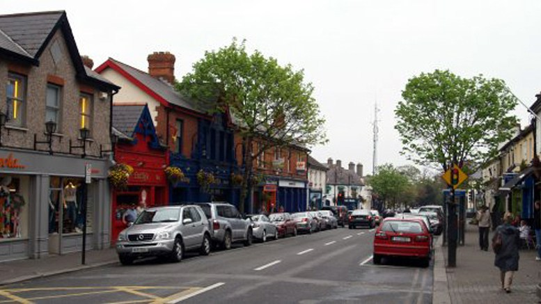
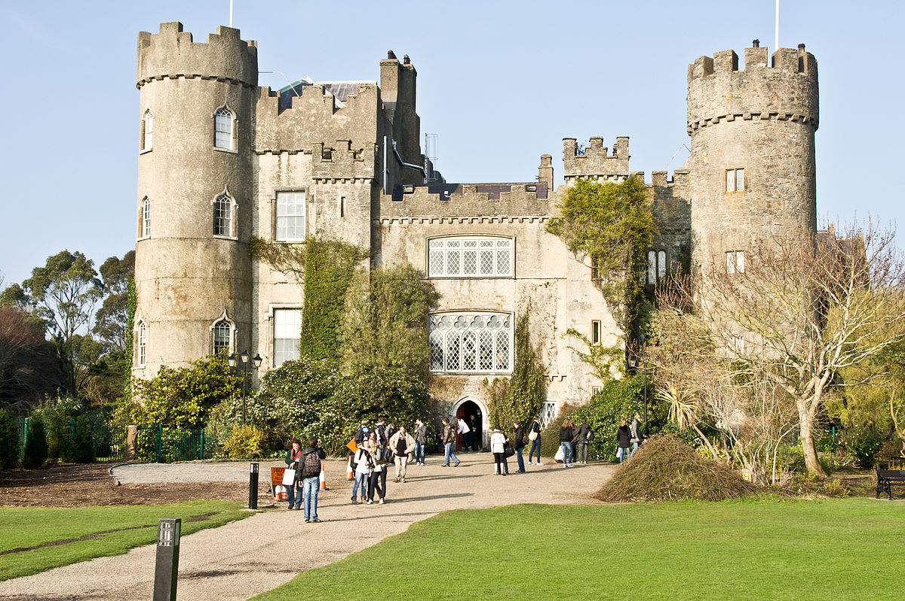

Dublin Bay
Seahaven is a fantastic location to explore the treasures Dublin Bay and Dublin City have to offer. Take a trip to Howth and enjoy a breath taking walk along the cliffs. Spend a day in the city, visit Trinity College and see the Book of Kells.

Malahide Village
Traditional shopfronts and several cobble-lock side streets give the village an intimate and welcoming feel. There are a broad range of pubs and restaurants to take you well into the night and a wide range of leisure and sports activities to get you up in the morning.

Malahide Castle
Surrounding the town are the protected grounds of Malahide Castle, with botanic gardens, sports pitches and a children’s playground, land which was once the private estate of Baron Talbot.